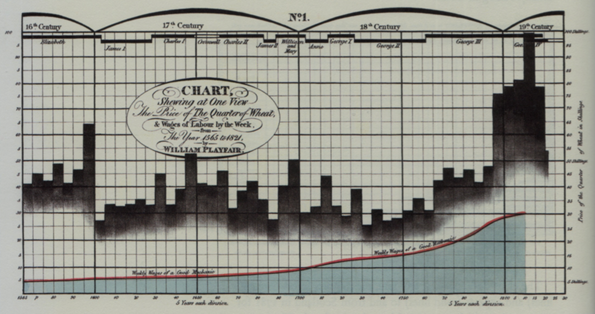
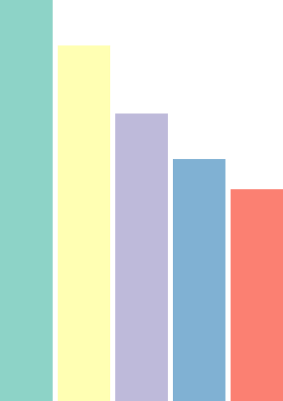
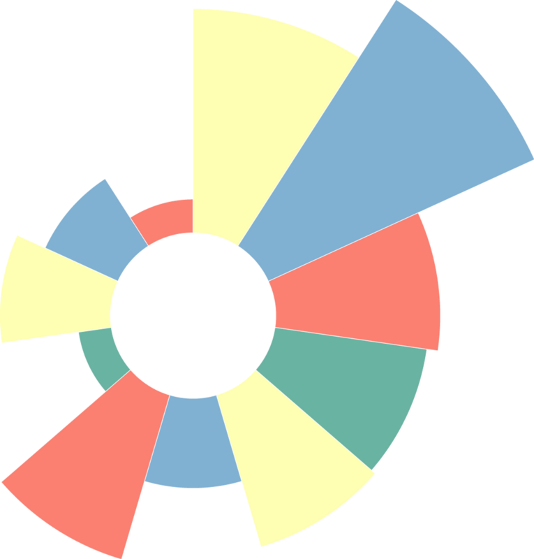
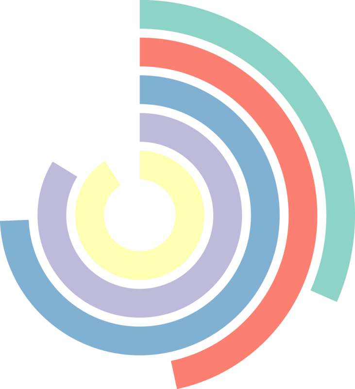
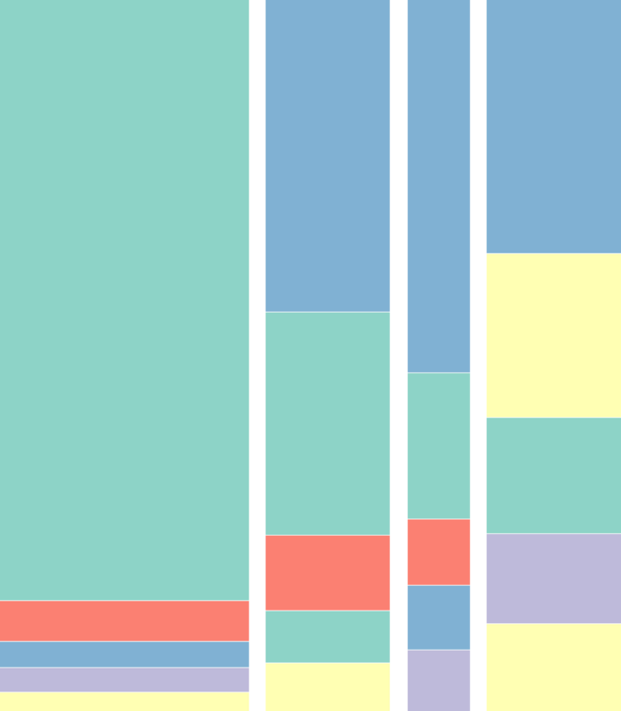
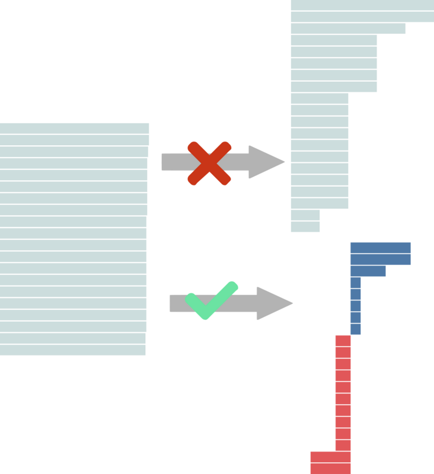
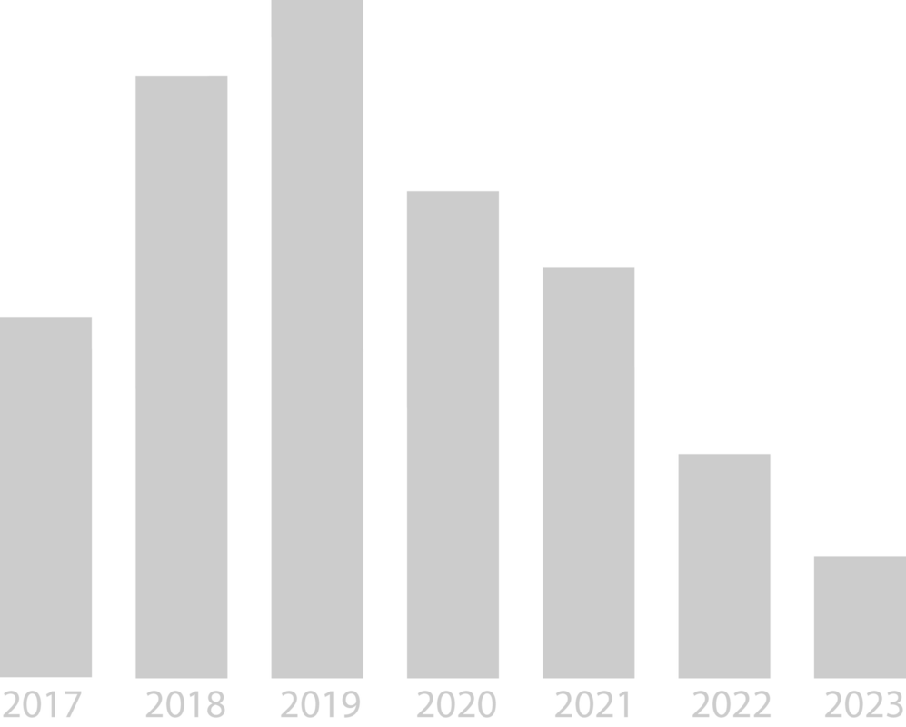

Historique
Les premiers diagrammes à représenter sous forme graphique le rapport entre deux variables ont été produits en 1370 par le Français Nicole Oresme.
Diagramme à barres de Nicole Oresme

William Playfair diffusa les diagrammes à barres à la fin du 19ᵉ siècle afin d’illustrer différentes statistiques.
Diagrammes à barres de William Playfair

Graphique représentant le prix du blé et le salaire hebdomadaire de 1565 à 1821
- Timeline de l’histoire de la dataviz
Pourquoi des diagrammes à barres
La principale raison de les utiliser
- Ils sont bien adaptés pour comparer des valeurs catégorielles ou nominales.
- Ils sont faciles à créer et à comprendre. Ce sont des graphiques “passe-partout”.
- Le diagramme à barres est une bonne alternative au diagramme à secteurs.
La principale raison de ne pas l’utiliser
- Trop utilisé, il peut “lasser” le lecteur.
- Pour que le diagramme reste lisible, le nombre de catégories ne doit pas être trop élevé. L’alternative consiste à regrouper les catégories.
Le diagramme à barres et ses variantes
Barres verticales (Vertical bar chart)

Avantages
- Utile pour comparer différentes variables qualitatives (nominales ou ordinales).
- Adapté pour les séries chronologiques (années, heures …)
Inconvénients
- Le nombre de catégories à comparer est limité par la largeur de l’écran.
- L'espace en bas des barres est limité pour les étiquettes (l’inclinaison du texte ne facilite pas la lecture).
- La largeur disponible pour l’affichage (éventuel) des valeurs au-dessus de chaque barre est limitée.
Barres horizontales (Horizontal bar chart)

Avantages
- Utile pour comparer différentes variables qualitatives (nominales ou ordinales).
- Le nombre de catégories à comparer n’est pas restreint (possibilité de défilement vertical de la page).
- L'espace sur la gauche des barres est grand pour les étiquettes.
- L’espace à droite des barres est grand pour l’affichage éventuel des valeurs.
Inconvénients
- Le nombre de catégories à comparer est limité par la hauteur de l’écran.
- Eviter de faire un diagramme trop grand car faire défiler le diagramme ne permettra pas d’avoir un aperçu global.
Barres empilées en valeurs absolues (Stacked bar chart count)

Avantages
- Le diagramme à barres empilés (nombre cumulé) permet d'observer la valeur totale d'une catégorie d'éléments tout en montrant la contribution de chacun de ces éléments à la valeur totale.
- Réalisable aussi avec des barres horizontales.
Inconvénients
- Diagramme difficile à lire en raison du décalage des barres.
- Le nombre d’éléments doit être limité pour que le graphique reste lisible.
Barres empilées en pourcentage (Stacked bar chart percent)

Avantages
- Le diagramme à barres empilés (pourcentage cumulé) affiche toutes les catégories à la même taille, représentant une plage de 0 à 100 %. Les sous-catégories sont toutes affichées comme proportions des barres.
- Réalisable aussi avec des barres horizontales.
Inconvénients
- Diagramme difficile à lire en raison du décalage des barres.
- Le nombre de sous-catégories doit être limité pour que le graphique reste lisible.
Barres multiples (Grouped bar chart)

Avantages
- Le diagramme à barres verticales regroupées permet d'observer des catégories composées de plusieurs sous-catégories. Les couleurs associées permettent de comparer les sous-catégories de chaque groupe.
- Ce diagramme est compatible avec l’utilisation de barres horizontales.
Inconvénients
- Le nombre de sous-catégories doit être limité pour que le diagramme reste lisible.
Barres circulaires (Circular column)

Avantages
- Le diagramme à barres circulaires est une variante du diagramme à barres multiples. Les bases de chaque barre sont déployées sur des coordonnées polaires (ligne ⇒ cercle).
- Ce diagramme attire grâce à son effet esthétique.
- A ne pas confondre avec un diagramme rose des vents qui visualise des surfaces empilées.
Inconvénients
- L’échelle des valeurs est proportionnelle au rayon, malgré les variations de surfaces introduites par le cône. La disposition des barres peut être trompeuse et induire de mauvaises interprétations. Les variations de surface peuvent prendre le pas sur la variation de hauteur, ce qui rend les comparaisons plus difficiles.
Barres radiales (Radial bar chart)

Avantages
- Les barres horizontales sont déployées et déformées sur des coordonnées polaires. L’enroulement rend le graphique plus compact et produit un effet esthétique lorsque les écarts entre les barres sont élevés.
Inconvénients
- Pour une même valeur, selon que la barre est positionnée près du centre ou au contraire éloignée, la longueur diffère. Le graphique est moins lisible qu’un graphique à barre classique.
Marimekko (area bar chart)

Avantages
- Cette représentation est une variante du diagramme à barres empilées à pourcentage cumulé. La largeur des barres ajoute une dimension supplémentaire.
Inconvénients
- Diagramme difficile à lire en raison du décalage horizontal des barres.
- Le nombre de sous-catégories doit être limité pour que le graphique reste lisible.
Histogramme

Avantages
Un histogramme est un diagramme à barres dénué d’écarts entre les barres. Les histogrammes sont utilisés illustrer les variations d’une donnée quantitative (numérique), par exemple la distribution par âge d’une population ; tandis que les diagrammes en barres sont utilisés pour les données catégorielles ou nominales, par exemple, la catégorie socio-professionnellle.
Pyramide des âges

Avantages
La pyramide des âges est un exemple particulier d’histogrammes. Il s’agit de deux histogrammes assemblés dos à dos. C’est un graphique incontournable pour représenter la répartition par âge et par sexe de la population. Les valeurs des barres expriment soit un nombre de personnes ou un pourcentage du total.
Recommandations
Les données
- Les diagrammes à barres permettent de visualiser les valeurs de variables catégorielles ou nominales.
- L’Histogramme permet de visualiser la répartition des valeurs d’une variable aléatoire continue en la représentant avec des barres correspondant à des tranches de valeurs définies au préalable.
Recommandation 1
L’échelle doit commencer à zéro sinon les comparaisons entre les barres sont fausses. Cette erreur est souvent faite pour amplifier les différences entre des barres qui ont des valeurs proches. Une alternative consiste à représenter les écarts par rapport à une valeur médiane.

Recommandation 2
- Que ce soit les diagrammes à barres multiples ou les diagrammes à barres empilées, privilégiez les multiples petits. Ils sont plus faciles à lire (si les échelles sont identiques).

Recommandation 3
- Méfiez-vous des couleurs. Utilisez la couleur pour faire ressortir une information particulière.

Recommandation 4
Facilitez la lecture des différents éléments pour votre auditoire :
- Lorsque le label de vos barres est très large, privilégiez les diagrammes à barres horizontales.
- Plutôt qu’une échelle sur un axe, affichez les valeurs à l’extrémité des barres ou mettez les deux.
- Classez les valeurs des barres par ordre croissant ou décroissant ou par ordre alphabétique des noms des catégories suivant l’objectif du graphique.
.png)
Recommandation 5
- Privilégiez les diagrammes à barres verticaux pour les séries chronologiques.

Testez par vous-même
Diagramme à barres verticales ou horizontales
Diagramme à barres empilées, groupées et variantes
Outils
Sélection d’outils
Nous vous proposons des diagrammes, des variantes et des lignes directrices, mais peut-on les mettre en œuvre concrètement avec les outils graphiques ?
La liste des logiciels de visualisation de données est longue et en faire une analyse exhaustive serait fastidieuse et peu pratique à utiliser. Nous avons choisi quelques outils connus, facile d’accès pour des débutants et qui permettent d’exporter les graphiques dans un format vectoriel .svg (sauf pour l’outil Tableau Software).
Dans ce format, les diagrammes se composent d’un ensemble d’objets graphique (polygones, lignes, cercles et textes) qu’il est possible d’importer dans des outils de présentation tels que PowerPoint, Draw ou des outils vectoriels dédiés comme Illustrator ou son équivalent libre Inkscape. Il est alors possible de faire manuellement des modifications qui ne sont pas ou difficilement réalisables avec l’outil de dataviz.
Exemples
Les exemples qui sont proposés présentent des réalisations basiques. Pensez à sélectionner l’onglet correspondant au diagramme à barres.
EXCEL Exemple Excel
En savoir +
- Tous les types de diagrammes à secteurs sont réalisables (n’hésitez pas à regarder des tutoriels pour les construire si besoin).
- Pour transférer un graphique au format .svg, sélectionnez le graphique dans l’onglet puis faire un copier-coller vers l’outil de dessins vectoriels ou de présentation.
GOOGLE SHEET (on line)
En savoir +
- Tous les types de diagrammes à secteurs sont réalisables (n’hésitez pas à regarder des tutoriels pour les construire si besoin).
- Pour transférer un graphique au format .svg, sélectionnez le graphique dans l’onglet puis en haut à droite du graphique, cliquez sur l’icone puis télécharger au format .svg.
TABLEAU SOFTWARE
Le site Tableau public propose de nombreux exemples de réalisation de diagramme à barres
En savoir +
- L’outil Tableau ne propose pas d’exportation au format .svg mais au format .pdf. Dans ce format, avec les outils vectoriels, l’extraction des formes du graphique reste possible mais pas très pratique.

CALC OpenOffice
En savoir +
- Tous les types de diagrammes à secteurs sont réalisables (n’hésitez pas à regarder des tutoriels pour les construire si besoin).
- Pour transférer un graphique au format .svg, sélectionnez le graphique dans l’onglet puis faire un copier-coller vers l’outil de dessins vectoriels ou de présentation.

RAWgraph (on line)
En savoir +
- Cet outil en ligne simple ne permet pas de réaliser tous les types de diagrammes à secteurs.
- Sa simplicité d’utilisation et sa fonction d’exportation au format .svg le place comme une possible alternative à des outils plus complexes comme les tableurs.
Les langages de programmation
Sachez enfin, qu’avec les librairies graphiques associées aux langages de programmation R, Python ou JavaScript, il est possible de réaliser tous les diagrammes et les recommandations.
Liens vers le code de graphiques basiques :
JavaScript Observablehq (1)
R (R Graph Gallery)(2),
Python (Python Graph Gallery)(2),
JavaScript d3.js (d3.js Graph Gallery)(2) .
(1) Notebooks observablehq de l’association TDV
(2) Site de Yan Holtz (en anglais) et
Le site The Data Visualization Catalogue propose aussi des exemples réalisés avec de multiples outils ou langages de programmation (en anglais).